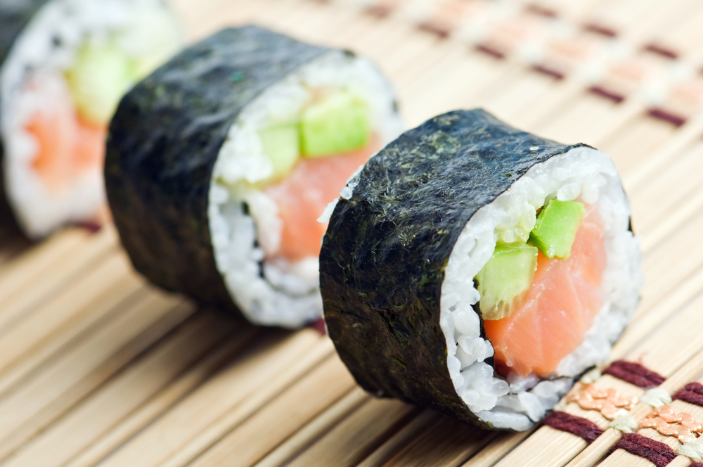

Sushi recipe

This is how to make my favorite sushi recipe:
-
Soak rice for 4 hours. Drain rice and cook in a rice cooker with 500ml of water. Rice must be slightly dry as vinegar will be added later.
Immediately after rice is cooked, mix in 6 tablespoons rice vinegar to the hot rice. Spread rice on a plate until completely cool.
Place 1 sheet of seaweed on bamboo mat, press a thin layer of cool rice on the seaweed. Leave at least 1cm at top and bottom edges of the seaweed uncovered. This is for easier sealing later. Dot some wasabi on the rice. Arrange cucumber, avocado and smoked salmon onto the rice.
Slightly wet the top edge of the seaweed. Roll from bottom to the top edge with the help of the bamboo mat tightly. Cut roll into 8 equal pieces and serve. Repeat for other rolls.
Go back to main page